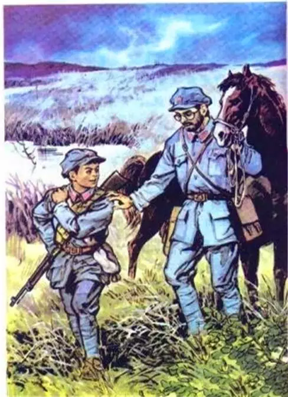
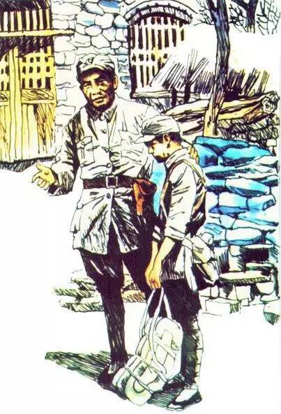
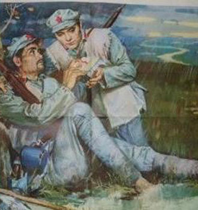
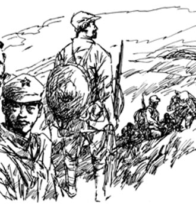
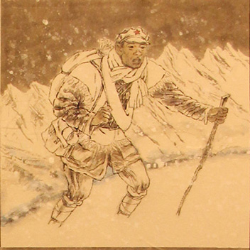
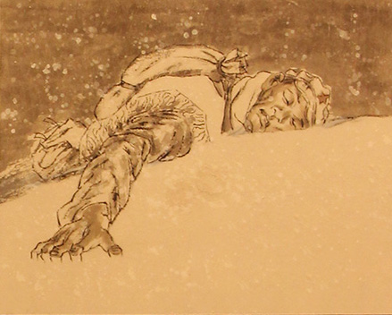

长征精神
长征精神
长征这一人类历史上的伟大壮举，留给我们最可宝贵的精神财富，伟大的长征精神，作为中国人红色基因和精神谱系的重要组成部分，已经深深融入中华民族的血脉和灵魂，成为鼓舞和激励中国人民不断攻坚克难、从胜利走向胜利的强大精神动力。长征胜利80多年来，我们党团结带领全国各族人民，进行了一次又一次波澜壮阔的伟大长征，夺取了一个又一个举世瞩目的伟大胜利。
长征小故事
-
倔强的小红军
长征途中，陈赓看见一个非常瘦小的红军，于是便要把自己的粮食分给他。小红军拒绝了，并拍拍自己包说还有很多粮食。分开后，陈赓再一次看到小红军时，发现他已经死了，打开他装粮食的袋子，发现里面是一个有很多牙印的牛膝骨，刚强的小红军战士在生与死的考验面前，宁可牺牲自己也不愿意拖累别人，把困难和危险留给自己。
- 
- 
- 
- 
-
七根火柴
在1935年红军过草地的途中，小森林就是当时的姜冬村，是红军边草地的必经之路。《七根火柴》描写长征过草地途中，一个生命垂危的红军战士把党证和夹在党证里的七根焦干的火柴交给掉队的战友，请他转交给党组织。言毕，安然地闭上了眼睛 七根火柴，七颗火种，燃起了人们心中的希望,将一个灾难深重的中国带向了光明，七根火柴，燎原中国！
-
哑巴排长
红军在翻越雪山途中，一位因伤致哑的排长负责团给养队的工作。为了给雪山上的队伍送粮，他背着一百多斤粮食，顶风冒雪向上进发，可数日不见归队。战友们焦急地上山寻找，在半山腰发现了“哑巴排长”，他趴在洁白的雪上，沉重的粮食压在身上，右手使劲地向前伸出，手指深深地抠在冰雪里，身体保持着向上爬行的姿势，怀里还揣着两个没舍得吃的山芋。
- 
- 
为实现中国梦努力奋斗
作为当代的大学生，我们首要的任务还是要好好学习,在学习的过程中不断地提升自己,锻炼自己的综合素质，能够做到自强不息，弘扬艰苦奋斗的精神是我们世世代代都不能忘记的，长征精神我我们的精神财富，我们要充分利用这财富，尤其是我们当代的大学生，我们要让世界看到全新的中国，让世界看到积极向上的中国青年，少年强则国强，我们肩负复兴中华民族的重任，所以从先开始，我们严格要求自己，让自己更强，追求更高的目标，为实现中国梦努力奋斗!